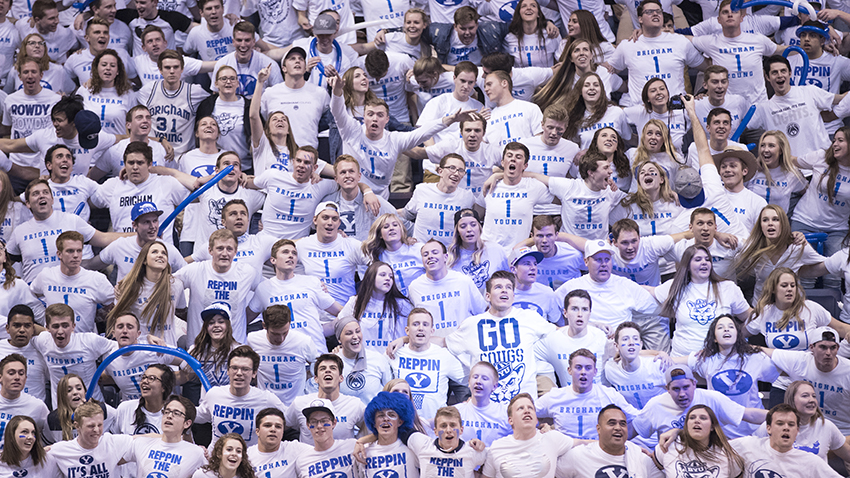
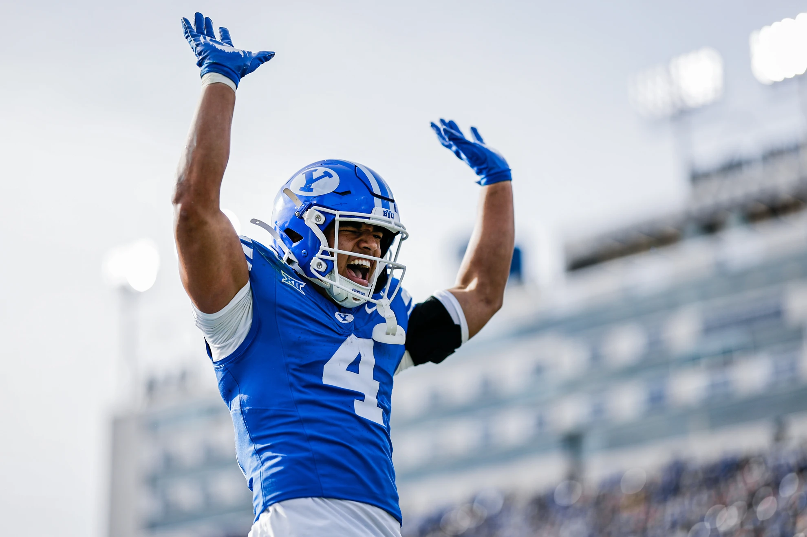

The Hardest Sports in the World
Below is an interactive map of the most difficult sports in the world, ranked by 11 different skillset metrics. While no sport is easy, these ones take the prize for the toughest of the tough.

Sports are an incredible way to connect with other people. There is such a wide range of sports at so many levels that almost anyone can find something that interests them. Sporting events, especially live ones, can bring together all kinds of fans and spike emotions in a way that few other things can. There is something magical about an arena full of people exploding at the same time to celebrate a big moment.
Sports create community, emotion, and unforgettable shared experiences. As a sports marketing and fan experience intern, I get to see this magic every day.


Look at the emotion in the actions of the fans and players after this signature BYU Football win. There's nothing else like it!
Below is an interactive map of the most difficult sports in the world, ranked by 11 different skillset metrics. While no sport is easy, these ones take the prize for the toughest of the tough.